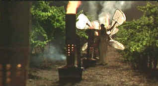

| A Walk in the
Clouds/B+,B |
| Fox/1995/102/ANA
1.85 |
Like the fragrance of a beautiful spring
blossom, A Walk in the Clouds is unabashedly romantic. Director Alfonso Arau has his fingers
on the pulse of this style filmmaking. Arau extracts ever bit of magical elixir from his sweetly
realized fantasy. With more solid sense of reality than his wonderfully magic Like Water for Chocolate,
A Walk in the Clouds is simpler and even more romantic. A chance encounter on a bus leads
from one world to another, from the bitter reality of returning war vets to the rustic sweetness of
wine country in full bloom.
 |
| Butterflies battle the frost. ©Fox |
Keanu Reeves delivers an outstanding
performance as Paul Sutton, the young chocolate salesman newly returned from service in World War
II Europe. Reeves gives Sutton the requisite sturdiness of character and innocence to fashion an
extremely appealing romantic leading man. Beautiful and sensual newcomer Aitana Sanchez-Gijon is
thoroughly delicious opposite Reeves. The two ignite the vineyards with passion and purity. Anthony
Quinn turns in a broad and delightful performance as scion of the Aragon clan grandfather Don
Pedro, a lover of chocolates and love. Giancarlo Giannini is far too sour as papa Alberto Aragon, a
weakness in the script and a fault in character interpretation, yet it doesn’t ruin the taste of
the wine.
Arau doesn’t loose an opportunity to coat his loving film with
sugar crystals of romance. Blazing sunsets illuminate bucolic vineyards breathtakingly. Fanning the
frost away is an excuse for amorous embraces. The first crush of the grapes is a festive purple
dance laced with an earthy sensuality. Even a night time serenade isn’t too much for Arau’s
romantic vision.
Arau's collaboration with cinematographer Emmanuel Lubezki is
inspired. Lubezki creates dreams through his lens, painting images with supreme confidence. Maurice
Jarre's score is unabashedly romantic.
Arau likes to shoot with filtered lenses and a fuzzy warm palette. This
Fox DVD transfer captures the spirit of Arau's filmmaking, though at times the image is too soft
for my taste. My guess is that the original elements exhibit some inconsistency in focus. Edge
enhancement kept to a very minimum benefits the transfer. More important, the exquisite lighting is
preserved with outstanding accuracy. Some of these images absolutely look like they were painted
with light. Colors are delicate and have a fine range. I did not get a huge sense of space from the
Dolby Digital 5:1 mix. Dialogue is delivered with clarity and the music is presented in a nice
front sound field. A short, standard, featurette and a theatrical trailer accompanies the film. No
filmographies.
|
|
|
|

Selections from the Feature Archive
include articles on Akira Kurosawa, Frank
Darabont, Blonde Bimbos, Hollywood Street Gangs, or Vietnam: The
Hollywood Pariah, and many more....

Watching Movies or Watching Video
Don't lose sight of why you bought that DVD in the first place.
 
DVDPlanet is the DVD
incarnation of legendary laser retailer Ken Crane's. Deep discounts and serious service.
 Direct from the corridors of the Home Theater Forum, Home Theater Talk is the
newest place on the Net to discuss everything home theater. Friendly atmosphere and knowledgeable
folks are the secret ingredients. Direct from the corridors of the Home Theater Forum, Home Theater Talk is the
newest place on the Net to discuss everything home theater. Friendly atmosphere and knowledgeable
folks are the secret ingredients.

The National Film Preservation Foundation (NFPF) is the nonprofit organization created by the U.S. Congress to save
America's film heritage.
Avid-Collector Posters

Great selection of big foreign paper, plus the home of J. Fields linen
service.

The home of Francis Ford Coppola's Zoetrope
Studios has more corridors of interest than you might expect.
|